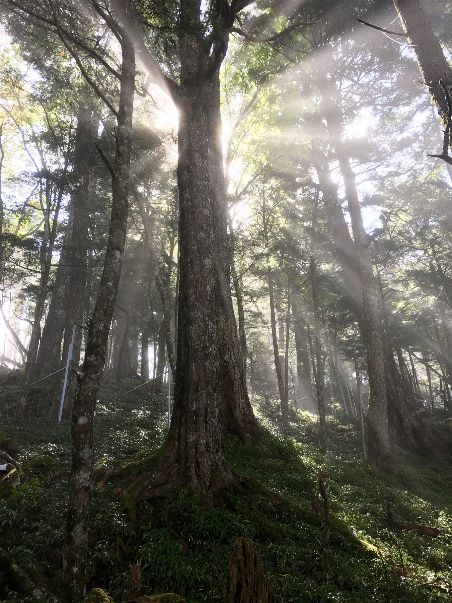
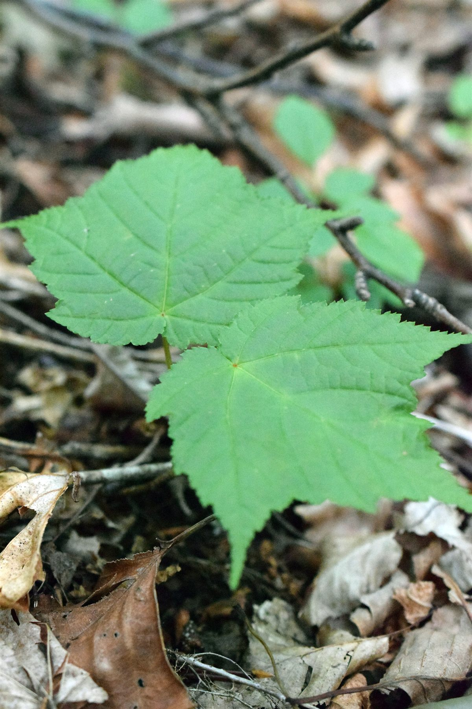
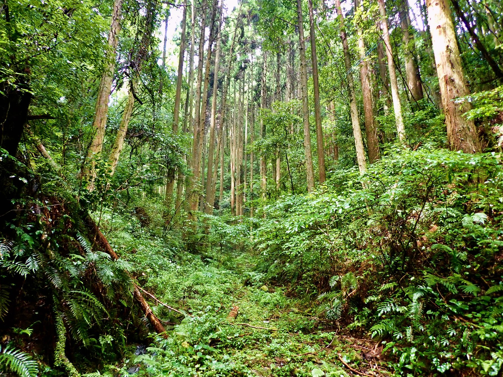
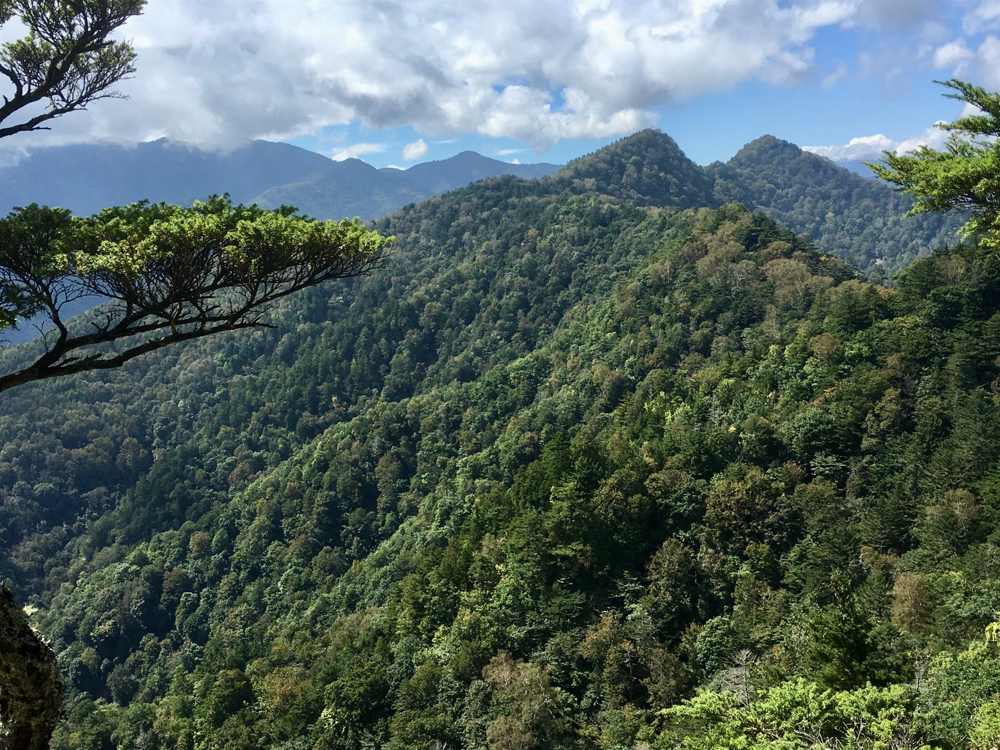
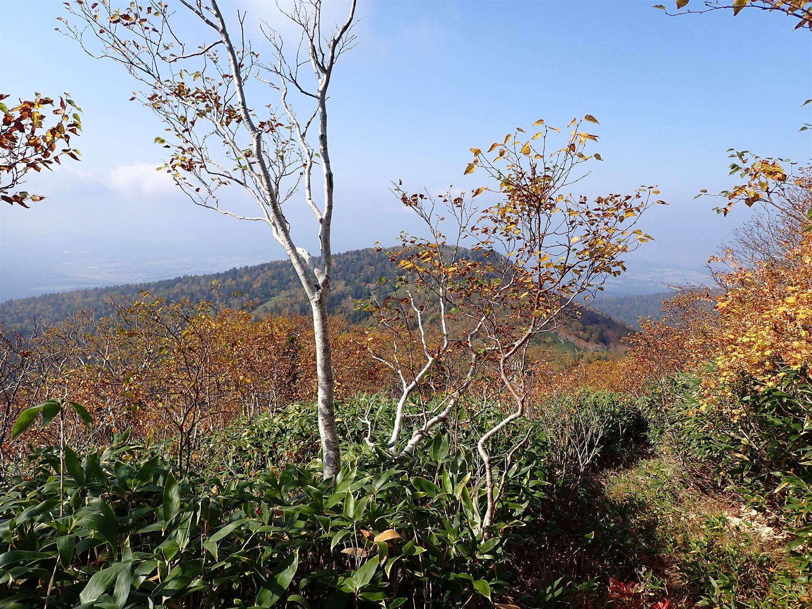
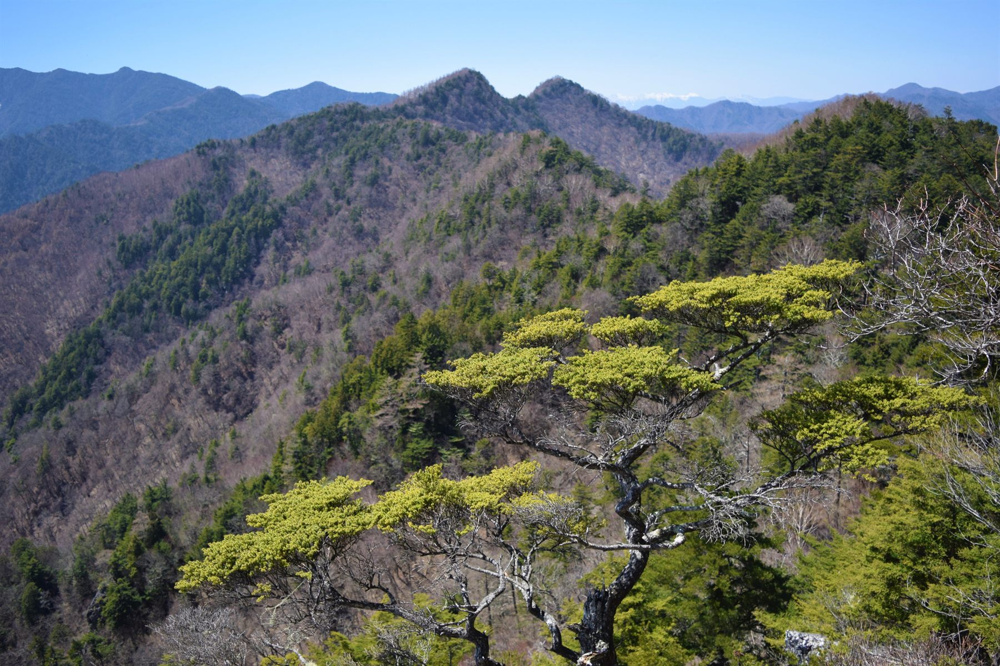

The hidden life beneath the forest floor
Nobuhiko Shigyo, Ph.D.Lecturer, Graduate School of Horticulture, Chiba University
Beneath the ground we walk on every day lies an invisible world teeming with microbial life. I study how bacteria and fungi are distributed in forest soils, how they change across space and time, and how they shape the functioning of forest ecosystems.




Four questions about life below ground
Using a multifaceted approach that combines molecular experiments, field observations, manipulation studies and statistical modelling, I ask how soil microbial communities are assembled and what they do for the forest.
Dynamics of soil microbial communities across spatio-temporal scales
From elevational gradients to seasons and headwater catchments: what structures bacterial and fungal communities at each scale?
Microbial community ecology in litter decomposition
Why does leaf litter decompose faster at home? Microbial identity, home-field advantage and mixed-litter decomposition.
Non-symbiotic nitrogen-fixing bacteria in temperate forests
Free-living diazotrophs in litter and soil of Japanese cedar plantations, profiled with long-read sequencing.
Mycorrhizal communities and local adaptation of trees
How environment and provenance shape root and soil fungi, and whether fungal partners help tree populations adapt locally.
Soil microbial identity explains home-field advantage for litter decomposition
New Phytologist 243: 2141–2156 (2024)
Leaf litter often decomposes faster in the forest it came from than elsewhere. By combining reciprocal litter transplants with manipulations of the soil microbial community, this study shows that the identity of the microbes, rather than the soil environment alone, drives this home-field advantage.
Highlighted with a Commentary by Ashley Keiser in New Phytologist: “Putting soil microbes on first: Identifying the engines of home-field advantage in litter decomposition”. Read the commentary
All publicationsIn forests around Japan
Fieldwork takes place in a variety of forests in different parts of Japan, from natural montane stands to managed plantations.



